Johann Cohen-Tanugi
The Kalman vertexer is still under construction, as well as this document!
With respect to collider experiments, GLAST presents several peculiarities:
It is important to emphasize the fact that GLAST program relies on the measurements of incident gammas energy and direction. The position of the pair production vertex is not mandatory. It may help to analyse an event, for instance by providing an ``in converter decay'' constraint. The Kalman vertexer will eventually provide for such capability. Nevertheless, the main purpose of the Kalman vertexer lies in the fact that it provides an automated rigorous agregation of the different tracks covariance matrix. This is essential for a good understanding of the reconstruction errors, that would not rely on the MonteCarlo exclusively.
I note also here an interesting feature that I came aware of during a discussion with Bill Atwood: Given the fact that track direction errors arise primarily from MS, which is independant for each track, one can consider that each reconstructed track, provided that it is not too badly reconstructed, is an independent estimation of the initial gamma direction, to be properly weighted by its error matrix. This gives rise to a prescription for gamma direction which is completely different from the case where one adds the physical momentum of the tracks to make up the candidate photon momentum. The first prescription exemplified in TkrComboVtxRecon.cxx, amounts to the following estimation:
| 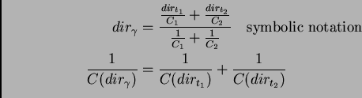 |
whereas the logical outcome of the Kalman vertexer will be 1
| 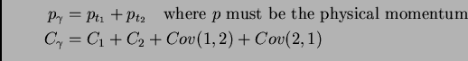 |
Let's define the following:
Then, the Kalman procedure relies on the measurement equation, which defines a mapping from mk to the (xt, qtk):
| 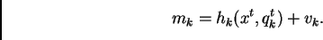 |
Besides, its application requires hk to be linear. For (x0k, q0k) chosen in the vicinity of (xt, qtk), linearization of hk yields:
| 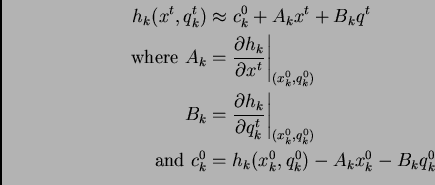 |
Usually, x0k is set to xk - 1, i.e. the vertex estimate after k - 1 step, and for q0k the momentum of the track at the POCA to x0k.
A least 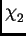 prescription allows to update information at each step, with the following filtering formula:
| 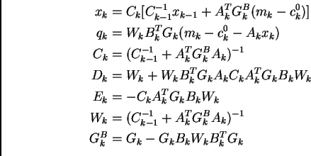 |
The 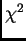 increase when adding track k is computed as:
| 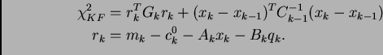 |
If 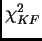 exceeds a user defined upper value, track k can be discarded from the fit. The total is 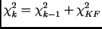.
The smoothing step goes over all accepted tracks and recomputes qNk,DNk and ENk, using the final estimates x and C in the filtering equations instead of xk and Ck. It also allows to compute:
Note that, in the event that x is noticeably different from x0, the whole procedure can be performed again with x0 and C0 set to x and C respectively.
GLAST Track fitting uses the following parametrization (one needs a point on the track, and the latter's direction):
In order to remain consistent with the track reconstruction paradigm, we use projected slopes in order to parametrize the direction of the track: by definition, the ``geometrical'' momentum is the vector (SX, SY, E) defined for each track. The track being a straight line, it doesn't change all along the track 2, so that there is no extra work required to compute q0k from the measured qk.
In order to determine the measurement equation, one needs to define a reference plane where ``geometrical'' momentum is defined. In collider experiment, this would be, typically, the normal plane to the beamline, containing the POCA on the track to the beamline (i.e. Z=0 axis).
In the case of GLAST, we take as reference plane the horizontal plane containing the first hit of the best track, which is the first one in the track list. This seems a reasonable, though probably biasing, estimate for a vicinity to the true vertex. All tracks should have their measurement vector mk defined at this point 3. As a result, the measurement equation (without noise) 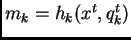 reads:
| 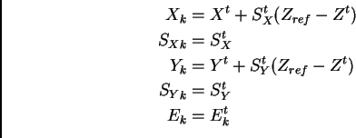 |
Matrices Ak and Bk are straightforward to compute:
| 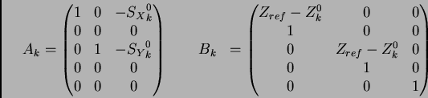 |
It is interesting to note that the measurement equation is very close to being linear:
| 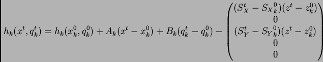 |
| 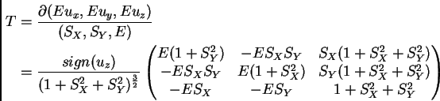 |
and the transformation formula: Q'=TT . Q . T.
This document was generated using the LaTeX2HTML translator Version 2K.1beta (1.47)
Copyright © 1993, 1994, 1995, 1996,
Nikos Drakos,
Computer Based Learning Unit, University of Leeds.
Copyright © 1997, 1998, 1999,
Ross Moore,
Mathematics Department, Macquarie University, Sydney.
The command line arguments were:
latex2html -split 0 -nomath -html_version 4.0,math -white -no_navigation -noreuse KalVtx.tex
The translation was initiated by Johann COHEN-TANUGI on 2002-09-05